Subsections
医学研究の場合，大規模病院で，症状の重すぎず軽すぎない人を対象に行われることが多い。
本来の患者集団とは異なるのでは？
実際，かなりプリミティブな判断でも個人差が結構ある。
教育研究でも，MITの大学生を対象にした研究結果が大学生一般にどれくらい当てはまるのか？
メタ分析ではなく，個票を用いた再分析を行う必要性（NCD：医学系データベース）
- Rubin, D. B. ...なるべく多くの共変量を入れる
- Pearl, J. ...何でもかんでも共変量を入れればよいというわけではない
結果変数  を
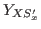
と書くことにすると，
直接効果には，
を
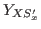
と書くことにすると，
直接効果には，
- 自然な直接効果：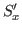
は，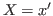
のときに生じた 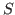
の状態（
 によって生じる）
によって生じる）
- 制御された直接効果：
 に固定される（
を経由するのにこれが固定されるのはおかしい）
に固定される（
を経由するのにこれが固定されるのはおかしい）
がある。
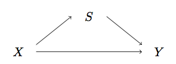
このとき，
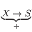
かつ
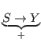
であっても，
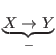
が起こりうる。
- 岩崎学 (2015). 統計的因果推論
- 星野崇宏 (2009). 調査観察データの統計科学
- Imbens, G. W. and Rubin, D. B. (2015). Causal inference for statistics.
- Pearl, J. (2009). Causality. （黒木訳）
項目反応理論にもとづく平均500，SD100の得点を，80点間隔で7レベルに分けた。（2015年度文科省「情報活用能力調査」の場合）
ある習熟度レベルに属する生徒が，同じ習熟度レベルの問題に平均50%以上の確率で正答するように得点間隔を調整。
シミュレーションの結果，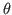
の母平均の推定にPVを用いた場合SEが大きかったが，偏りはなかった。
一方，母分散についてはPVがばらつきも偏りも小さくよい推定量であった。
MLE，WLEは過大推定傾向，EAPは過小推定傾向にあった。
ただし，項目数が増えるとこの差は縮まっていった。
- Plausible value について（PISAでは複数算出されているが，あの情報をどのように2次利用するのか）
- Mislevy, R. J., Beaton, A. E., & Sheehan, K. M. (1992). Estimating population characteristics from sparse matrix samples of item responses. Journal of Educational Measurement, 29(2), 133-161.
- データ融合（data fusion）
- 解釈レベル理論
- メンタルシミュレーション
- 評価の厳しさ
- 評価の一貫性
- 尺度範囲の制限
を考慮に入れた項目反応モデルの提案
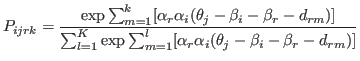
ただし，
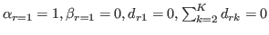
と制約する。
- 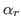
：一貫性
- 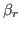
：厳しさ
- 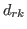
：尺度範囲の制限
隣接する評価カテゴリ間の差異
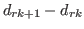
が正に大きい値をとるほど，評価カテゴリ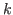
への反応分布の分散が広くなるため，評価カテゴリ
に評価が集中しやすい尺度範囲の制限が表現される。
ある評定者がどれくらい異質かというのは，評定者集団内での相対評価で定まる。
入試の評価でほとんど個人差をつけない評価者が多数を占める中で，合否を分けるために個人差を大きく振り分けて評定する評価者がいた場合，その人は異質ということになる。
しかし，他の評価者の評価が合否にほとんど寄与していないのだとすれば，この評価者を異質として重みを弱くしてしまってよいか疑問に感じる。
パフォーマンス評価の場合，真の能力
が存在すると仮定して評価するモデルを適用することは適切だろうか？
新体操の採点のように審美眼が人それぞれであるような場合に，そのパフォーマンスの真の価値を想定することに違和感を覚える。
むしろ，評価者の多様な規準や観点によって，能力は「構成される」ものだと考えたほうが良くはないか。
- 宇野・植野 (2016). 日本テスト学会誌
- 宇佐美 (2010). 教育心理学研究, 58(2), 163-175.
- diffusion model (Ratcliff, 1987)
- distance-difficulty 仮説
- 変分ベイズ
- ipsative データの項目反応モデル（Brown & Maydeu-Olivers, 2011）
- quasi-ipsative (Hick, 1970)
- faking (Jackson et al., 2000; Salgado & Tauriz, 2014)
Taichi Okumura
2017-12-08